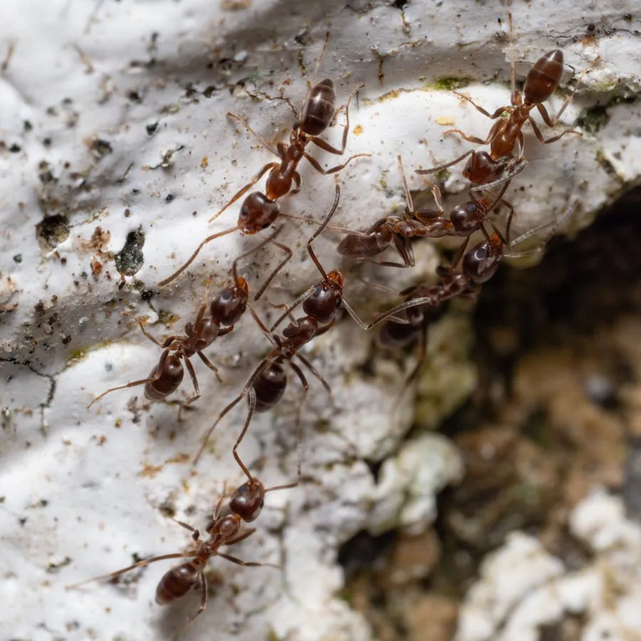

昆虫 · 动物界
阿根廷蚁 Linepithema humile

世界著名的入侵蚂蚁，体色浅褐，群体间极少争斗，形成分布广泛的超级群体，破坏本地蚁类和无脊椎动物。
- 分类
- 门节肢动物门纲昆虫纲目膜翅目科蚁科属线蚁属
- 栖息环境
- 城市、花园、农田和沿岸地区，在土中或建筑缝隙筑巢
- 地理分布
- 原产南美，现扩散至全球温暖地区
- 保护级别
- 暂无评估；世界百大入侵物种之一
物种志
阿根廷蚁工蚁体长约 2–3 mm，体浅褐至棕褐色，体表有细毛，腹部略膨大，触角呈膝状。蚁后颜色较深，体长约 4–5 mm。它的外形和普通家蚁相似，不容易用肉眼区分。
它原产于南美洲巴拉那河流域，随贸易和航运扩散到全球温暖地区，被列为世界百大入侵物种。阿根廷蚁最特别的特点是群体间很少互相攻击，来自不同巢的个体可以共同生活，形成占地很大的超级群体。它们捕食本地昆虫、排挤本地蚁类，还保护蚜虫获取蜜露，对生态系统和农业造成影响。防治以检疫、毒饵诱杀和减少人为传播为主，家庭中发现时可用饵剂处理，避免使用刺激性喷剂导致群体扩散。
形态与习性
- 食性杂食，取食昆虫、蜜露、腐果和人类食物
- 体长工蚁约 2–3 mm
- 识别体浅褐至棕褐色，体表有细毛
- 入侵性群体间少争斗，形成分布广泛的超级群体
- 防治检疫、毒饵诱杀和减少人为传播
趣味知识
- 阿根廷蚁不同巢的个体很少互相攻击，会形成超级群体。
- 它被列为世界百大入侵物种之一，扩散到全球温暖地区。
- 家庭中发现阿根廷蚁，用饵剂比喷杀虫剂更有效。